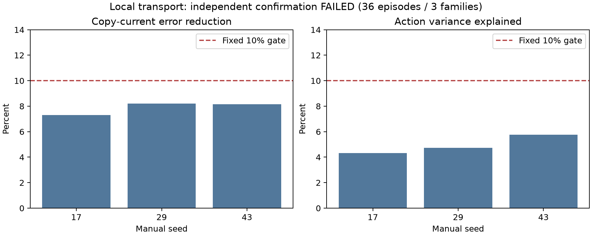

Frozen Molmo features, 250 training initial states, six actual action branches per state. These are prediction diagnostics, not closed-loop VLA scores.
Local transport failed the fixed independent confirmation gate. The failed result is retained. Later development fits do not override this decision.
